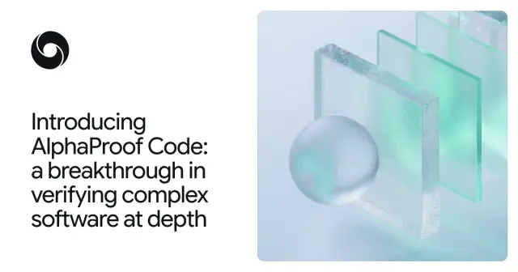

Google DeepMind「AlphaProof Code」発表 Signalプロトコルの実装を機械語レベルまで形式検証

Google DeepMindは2026年11月10日、AIエージェントと人間の専門家が協働してソフトウェアを形式検証する新フレームワーク「AlphaProof Code」を発表しました。SignalやGoogleメッセージで使われるSignalプロトコルについて、設計だけでなく実際にデバイス上で動くコンパイル済みコードが主要なセキュリティ特性を満たすことを数学的に証明したとしています。広く展開された暗号プロトコルの実装が、AIの有無を問わずこの深さで形式検証されたのは初めてだと同社は説明しています。
記事で取り上げている点
- 技術的詳細：人間が「何を」、AIが「どう」証明するか
- 背景：設計と実装のギャップを埋める
- 影響と課題
- 今後の展望
一次情報（出典） deepmind.google